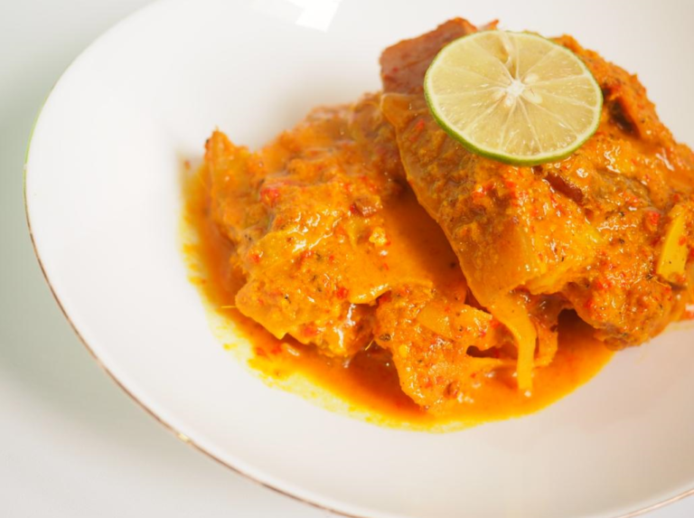

Arsik Babi

Description
One of the famous traditional foods of the Batak ethnic group in North Sumatra is arsik seasoning. Arsik seasoning is made from various types of spices combined into one, resulting in a complex and unique flavor. The taste produced is a mixture of refreshing sensation, savory, and delicious aroma. This food is familiar with certain traditional customs, whether for religious ceremonies, weddings, or thanksgiving rituals.
So, for mothers who cannot eat meat, it is okay to cook the Halal version with fish or other substitutes. The difference is that if using fish, the ingredients are added with kecombrang flowers, usually also using long beans, and the cooking method does not involve stirring or flipping.
Ingredients
- 1 kg Pork meat with half fat
- tubis or rebung
- oil
- 500-600 ml water
- 1 spoon of salt
- 1 spoon of pepper
- seasoning
- 6 pieces of garcinia cambogia
- 7 shallots
- 6 garlic cloves
- 100 gr of red bird's eye chili and curly chili
- A handful of green bird's eye chili
- 8 candlenuts
- 5 cm ginger
- 2 segments of turmeric
- 5 cm galangal
- 4 stalks of lemongrass
- 1 tablespoon of andaliman
Steps
- Put the pork in a pot filled with water. If using bamboo shoots, add them on the bottom layer.
- Coarsely crush the lemongrass, ginger, and cikala tamarind, and add them to the pot.
- Blend all the ground spices and then add them to the pot.
- Add salt according to taste and let it boil until it looks like this. Wait until the pork is almost cooked and the seasoning is absorbed into the meat.
- Finally, add buffalo milk and wait for it to be absorbed before serving.